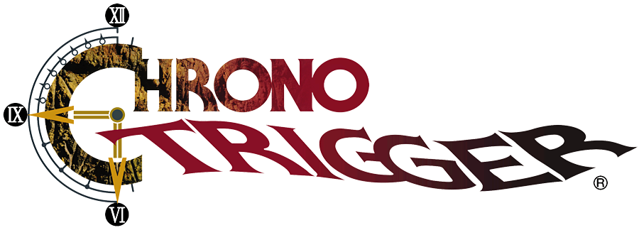
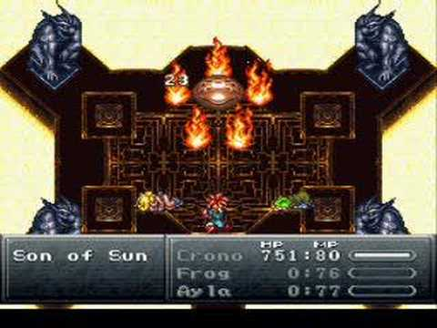
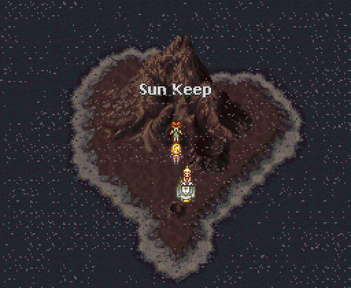
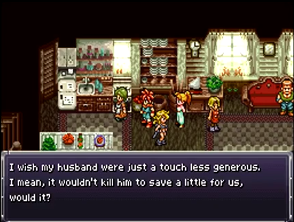
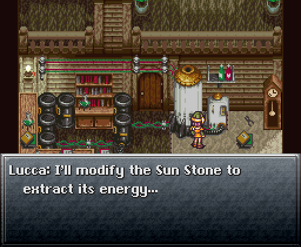

How to find the Sun Stone in...

- Start in 2300 AD, and head to the Southwestern edge of the map. Find a large mountain and enter the Sun Temple.
Travel through the temple until you reach The Son of Sun boss fight. Defeat him.
- In the next room, you should find the Sun Stone -- but it's out of power, and takes billions of years in sunlight to recharge.
Get back to the Epoch and travel to 65 million BC. Head to the Sun Keep and place the stone.
- When you return to 2300 AD, the stone'll be gone. Head back to 1000 AD first to find it's gone, then 600 AD to find it's still there.
That means it was stolen in 1000 AD; the search is on!
- Head to Porre in 1000 AD and visit the Mayor's Manor; the building's sparkling to show you something's important.
He denies he has it, but he obviously does. Leave the manor and enter the tavern.
- There's a man there selling Jerky for 9900 gold. It may seem worthless, but you need to buy it. Take the Epoch back to 600 AD.
- Go into the Elder's house (The Middle Ages equivilant to the Mayor's Manor) and walk up to the woman in the kitchen.
She wants to buy your Jerky for 10000 gold; deny her offer, and just give her the jerky for free.
- Travel back to the Mayor's Manor in 1000 AD and talk to the Mayor. That woman that you gave jerky was his great-grandmother!
It turns out she taught all her children the power of generosity, so now the mayor just gives you back the stone!
- Return to the Sun Keep (still in 1000 AD) and leave the stone on the sunlight. It's almost fully recharged here so just pop forward to 2300 AD!
- Make sure Lucca is in your party as you head to the Sun Stone in 2300 AD.
She'll collect it, and ask to return to her home to try applying the stone's power to some of her technology.
- At Lucca's house in 1000 AD, she'll create the WonderShot. It's a great gun that deals damage between 100 and 2300 with a standard attack.
Taban will now make you the Sun Shades, and once you finish the Rainbow Shell quest, you can create even more stuff.
- Wait, you don't know how to get the Rainbow Shell? Oh, you've got to be kidding me...



